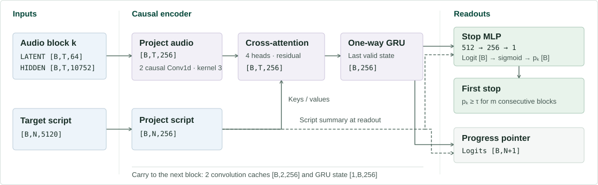

Short line
Asked to speak once. Whisper Base found four candidate utterances in 10 seconds.
Starts at 0.00, 1.14, 6.06 and 8.12 s.Detect when the scripted line is complete so the character can stop speaking and start listening.
Independent online validation pending.
A fixed output length lets the generator repeat a line after it finishes. Stopping at a pause can cut the line short.
Asked to speak once. Whisper Base found four candidate utterances in 10 seconds.
Starts at 0.00, 1.14, 6.06 and 8.12 s.Asked to speak once. Whisper Base found three candidate utterances in 15 seconds.
Starts at 0.54, 4.74 and 9.08 s.Open Speaking demos in local Sample review for both videos, timestamped ASR and the exact prompts. The short case has a whole-track ASR disagreement.
Each new audio block updates the state and produces a stop score.

LATENT [B,T,64] · HIDDEN [B,T,10752]LayerNorm + linear → [B,T,256] · kernel 3Audio queries [B,T,256][B,N,5120] → [B,N,256]Last valid state [B,256]512 → 256 → logit [B] → pₖ [B]Logits [B,N+1]pₖ ≥ τ for m consecutive blocksInputs. LATENT is stereo AudioVAE (32 per channel). HIDDEN is clean-cache-fill layer 24, zero-indexed (5,376 per channel). Audio and script valid lengths are [B]. The script adds position and repetition IDs [B,N]. The standard head pools word/character units. Content and Strict train with native BPE.
State. Each left-causal convolution uses SiLU, a residual and 0.1 dropout. Two caches [B,2,256] and the GRU state [1,B,256] carry across blocks and reset for a new event. Cross-attention masks script padding. The stop MLP concatenates the final valid state and an attended script summary [B,512]. Sigmoid converts the stop logit [B] to a probability. The separate pointer compares the last state with projected script units and a not-started sentinel.
First stop. A score below τ resets the consecutive-hit counter. The first block that reaches m triggers. m = 1 is the single-block rule. Features need to be ready at decision time for an online claim.
Labels. The first reliably complete block k is positive. Conservative labels use evidence-backed negatives. Dense first-hit backfills pre-k negatives on 339 anchored tracks and clips at k. Strict clips each target at its own k. Speaker uses time-aligned source prefixes with an uncertain final-word interval. Unknown and padding positions are masked where applicable. RAVEN dense balances events and observed classes, with a 0.5 silver weight.
Checked against the head implementation, feature observer, inference adapter, training configs and loss implementations.
| Family | Representation / architecture | Objective / policy |
|---|---|---|
| Standard | LATENT 2,642,817 parameters. HIDDEN 5,400,321. Conservative, dense and learning curves share this architecture. | Masked BCE. Earlier runs with progress targets also use progress CE. |
| Speaker LATENT | 64-D AudioVAE from recorded audio. | Mean or hardest historical negative. Progress adds 0.3 × progress CE to mean. |
| Content / Strict | Native BPE. The coupled variant reads last pointer logit minus logsumexp over other positions. | Trajectory BCE. Paired adds 0.5 pair BCE and weights trajectory BCE by 0.5. Coupled adds 0.3 progress CE and 0.1 monotonic penalty. |
| Top-K / last layer | Top-K reuses Strict. Last-layer adaptation updates 257 stop-readout parameters. | With more than two negatives, Top-K blends 0.75 all-negative mean and 0.25 top-two mean. Last-layer runs use BCE. |
| H/L probe | 64-D latent or fixed 64-D hidden PCA → GRU128 → CTC [B,T,39]. | Physical-prefix transcripts. One CPU update per arm, zero dev examples. |
| Replay rules | Same scores at varied thresholds and consecutive-hit counts. | 32 BPE-trained, unit-pooled replay entries are representation diagnostics. |
| Run | Data and method | Updates and weights | Outcome |
|---|
First threshold crossing on the frozen offline sets.
RAVEN Base52 has 52 scorable tracks and 12 unknowns from 64 attempts. Speaker Base64 has 64 distinct source videos (22 short, 21 medium, 21 long); 16 have a full post-completion block. A hit lands on the proxy target block. Missed means no trigger in the observed window.
RAVEN fixed 0.07: scale5000, step 1937, 44/52 hits, 0 early, 8 missed. Speaker best post-hoc: large_mean step 2000, 25/64 hits, 17 early, 22 missed. Its best zero-early post-hoc operating point gives 5/64 hits and 59 missed.
The default matrix excludes 32 BPE-to-unit-pooled diagnostics, including Content step 200 (45/52). Speaker has 39 entries without compatible HIDDEN features. Threshold 0.01494821608 on RAVEN yields 43/52, 42/52 and 39/52 for large_mean, scale5000 and small_mean, with 5, 7 and 1 early stops respectively.
| Checkpoint | Step | τ | Hits | Early | Late | Missed | Features |
|---|
Could not load evaluation data. Refresh to retry.
2–18 November 2026 · Beijing time